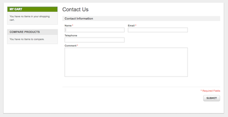
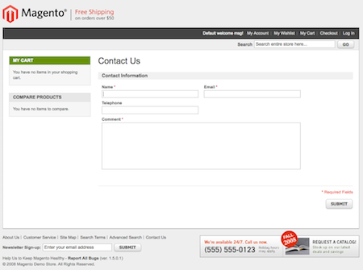

As I had noted earlier this week, I have not had a lot of Magento development time lately, so today I thought I’d spend a bit of time setting up a Magento 1.5 development environment on my Mac. This post will take you through the steps to set up Magento development with Eclipse for editing/debugging and SVN for version control, with deployment being managed by Modman. This relates to the project structure I described in my presentation at Magento Imagine, with the exception that I won’t go into detail about setting up a separate extensions repository, as that is probably more relevant to developers who build and release extensions than developers working on a single Magento project.
What this guide assumes:
- Mac development environment with MAMP
- Linux production environment
- SVN for version control, but Git can work too.
- Modman for deployment. Written by Colin Mollenhour
What we will cover:
- Installing SVN, Magento and Modman.
- Getting a free SVN repository.
- Setting up a Magento store development project with version controlled extensions, templates/themes, locale and emails.
- Development and deployment of changes to Production.
We have a lot to get through, so let’s not delay.
Step 1: Install Magento Locally
We’ll zap through a commandline install. We’ll be installing into your web server doc root. If you would like help setting that up I wrote a guide to installing MAMP on a Mac (a long time ago) and also (extra for experts) a guide to setting up virtual hosts on MAMP too.
#In your ~/Downloads directory or some where suitable wget http://www.magentocommerce.com/downloads/assets/1.5.0.1/magento-1.5.0.1.tar.gz tar xzf magento-1.5.0.1.tar.gz # I keep all of my Magento development versions in a web folder within ~/Documents mv magento ~/Documents/web/magento/1.5.0.1 |
Now the files are where they need to be, we can install Magento. First we’ll need a database to install into this can be done easily through the MySQL command line on MAMP:
# Default MAMP password is root - but you changed it right? /Applications/MAMP/Library/bin/mysql -uroot -p -e "create database magento1501" # If you're paranoid about security, I suggest a better password for your Magento database than 'password'. /Applications/MAMP/Library/bin/mysql -uroot -p -e "grant all on magento1501.* to magento1501@'localhost' identified by 'password'" |
Right, we have the files and a database, let’s run the Magento install.
# Fix up the permissions, see http://www.magentocommerce.com/wiki/groups/227/installing_magento_via_shell_ssh cd ~/Documents/web/magento/1.5.0.1 chmod -R o+w media var chmod o+w app/etc # Now we can run the actual install (all one line) /Applications/MAMP/bin/php5/bin/php -f install.php -- --license_agreement_accepted "yes" --locale "en_US" --timezone "America/Los_Angeles" --default_currency "USD" --db_host "localhost" --db_name "magento1501" --db_user "magento1501" --db_pass "password" --url "http://127.0.0.1:8888/magento/1.5.0.1/" --use_rewrites "yes" --use_secure "no" --secure_base_url "" --use_secure_admin "no" --admin_firstname "max" --admin_lastname "power" --admin_email "ashley.schroder@gmail.com" --admin_username "admin" --admin_password "password" # God willing you'll see something like this: SUCCESS: 76752360b8917ff49e815cb44934ef81 |
If it worked you should be able to get to the default Magento start page here: http://127.0.0.1:8888/magento/1.5.0.1/ (or where ever your web server’s doc root is).
Step 2: Install Modman and SVN
For SVN I use the CollabNet SVN packages, you can install them easily like any Mac app. Try to fight back the gag reflex that comes with a login-required download.
Once you have SVN installed you’ll want the latest Modman script (1.1.1) too.
# If you use a local bin directory then it's a great place to keep it cd ~/bin wget http://module-manager.googlecode.com/files/modman-1.1.1 mv modman-1.1.1 modman chmod +x modman #needs to be executable |
Optional tip: You can use something like export PATH=$PATH:/Users/yourname/bin/ in your ~/.bash_profile to set up a local bin folder. it’s also a nice place to put symlinks to the various MAMP binaries.
It’s worth mentioning at this point that to actually use SVN you’ll need a repository to store the code in. I run my own SVN server, but there are a number of great free online services you can use to get started. There’s a thread on the subject at Stack Overflow. Here are a few links to free signups – if you have experience with any of these please comment to let us know:
So get onto one of those sites, or your preferred alternative and sign up for a repository. In the coming steps we’ll need a repository URL and a username/password.
Step 3: Create Magento Store project
Finally, must be nearly smoko time! We’ve installed Magento, Modman and SVN. We set up a SVN repository. Now we can get started with some Magento development!
Slight detour first to make our skeleton Modman project and check it in to our repository. This is a good opportunity to flush out SVN issues before we get into the nitty gritty too. You can run these commands from anywhere.
#Get your empty repository svn co http://your-repository.com/path/to/repository cd repository |
Now, if you’re putting multiple store projects into one repository you might like to name your project after the store so make a directory for each one like this. The @shell thing is just a simple way of making a sort of ‘Hello World’ Modman project.
mkdir acmewidgets.com echo "@shell echo 'Hello World'" > acmewidgets.com/modman svn add acmewidgets.com svn ci -m "initial import of acmewidgets.com store project" . # If you see Committed revision X then it probably worked! |
Now we initialize Modman in the root of our Magento store. As an aside, Modman is well documented so you should check out the project wiki.
cd ~/Documents/web/magento/1.5.0.1 modman init modman acmewidgets.com checkout http://your-repository.com/path/to/repository/acmewidgets.com |
You should see ‘Hello World’ output like this:
A acmewidgets.com/modman Checked out revision 1. Hello World Checkout of module acmewidgets.com complete |
Ok so far so good, we now have all the Modman functionality in place, and a skeleton project in our repository. Let’s add some useful Magento functionality to our project.
At this point you can actually fire up your favorite IDE and map a SVN project to the folder .modman/acmewidgets.com and a new project. It’s also a good idea to map in the core code, but only for reference, not to change! If you do create an IDE project then you would add the below folders using the IDE, but I’ll keep going with the command line for transparency and simplicity.
What we are setting up now is the various parts of Magento that we want to have Modman link into the appropriate places in the Magento install. We’ll start simple with a new theme and a local override directory ( I have a feeling we’ll need this in Magento 1.5.0.1…).
cd .modman/acmewidgets.com # We'll base it on the modern theme, for better or worse. mkdir theme cp -r ../../app/design/frontend/default/modern/ theme/design cp -r ../../skin/frontend/default/modern/ theme/skin # Create a place for local overrides too mkdir local |
Now edit the modman file as we’ll need to add some new mappings:
vi modman |
You need to add contents as follows to the modman file – these map the project directories to their Magento store counterparts, Modman will manage the linking process for us. The syntax is described on the Modman wiki.
# add the theme theme/design app/design/frontend/default/acme theme/skin skin/frontend/default/acme # add Magento local overrides local app/code/local # Keep the Hello World in here, for the benefit of the tutorial. @shell echo 'Hello World' |
Save the changes to the modman file and then check they work.
cd ../../ #The force will overwrite the app/code/local directory with our symlink modman acmewidgets.com update --force |
We should now see successful output like this:
At revision 1. Created link: theme/design app/design/frontend/default/acme Created link: theme/skin skin/frontend/default/acme Created link: local app/code/local Hello World Update of module acmewidgets.com complete. |
Let’s check this in and send the changes to our Production Magento environment. Remember that all of these steps are probably best done in an IDE, I have shown them on the commandline only because I think it’s more transparent than a bunch of screnshots from a GUI.
svn add .modman/acmewidgets.com/* svn ci -m "added our acme theme and a local override directory to the project" .modman/acmewidgets.com/ |
Step 4: Deploy development project to Production
Now we can bring our Magento store project to the Production server and test it has worked.
I’ll assume you already have a fresh 1.5 Magento running on your production server. You should also install SVN and Modman. For a Linux server installing SVN should be easy-peasy, the Modman instructions I gave earlier for Mac are largely transferable, make sure you put the script somewhere sensible for running it in your environment.
First go to the root of you Magento store and grab the Modman project we setup. Modman will take care of the rest for us.
Note: If this is your honest-to-god production Magento store DON’T DO THIS YET, as part of the tutorial things will not go well. Just read, don’t run this.
cd /the/root/of/your/acme/store modman init modman acmewidgets.com checkout http://your-repository.com/path/to/repository/acmewidgets.com |
And now we can set the store theme to acme in the Magento admin and we should be presented with a copy of the modern theme running at acmewidgets.com, awaiting customization. Right?

WRONG!, Oh shit, something has gone wrong hasn’t it, your (not-really-production) store is missing a header! How stupid do we feel right now, we forgot to test our changes in our local Magento store and now we have pushed broken code to production. Don’t worry that only ever happens during a simulated disaster in a tutorial, we’d never make the same mistake in the real world…
Magento since 1.4.2 has broken Modman. The error is shown in exception.log if you enable logging in Magento:
CRIT (2): Not valid template file:frontend/default/acme/template/page/html/header.phtml
It is a reported bug with a working patch, we just need to apply it.
Never fear, the next part of the tutorial will take us through making a local code fix and deploying it to production, that was fortuitous…
Dry-Run: Making local changes and deploying them
This last step just shows how you can actually go through a development-deploy cycle. Thankfully we have an excellent use case: fixing this bug which affects Modman.
Back on our local development computer we need to apply this fix as a local code override.
cd ~/Documents/web/magento/1.5.0.1 mkdir -p .modman/acmewidgets.com/local/Mage/Core/Block/ cp app/code/core/Mage/Core/Block/Template.php .modman/acmewidgets.com/local/Mage/Core/Block/ vi .modman/acmewidgets.com/local/Mage/Core/Block/Template.php |
Make the following change at line 215:
... // Fix from CM @ http://www.magentocommerce.com/bug-tracking/issue/?issue=10487 // We do not test real path as symlinks fail, instead check for attempts to access parent directories // if (strpos($includeFilePath, realpath($this->_viewDir)) === 0) { if(strpos($includeFilePath,'..') === false) { ... |
Now check in our changes.
svn add .modman/acmewidgets.com/local/Mage/ svn ci -m "fix for the symlink issue in Magento 1.4.2+" .modman/acmewidgets.com/local/Mage/ |
…and deploy them to production (after you have tested locally and are satisfied with the results, of course).
# Back on the production server cd /the/root/of/your/acme/store modman acmewidgets.com update |
Now we should see the modern theme we were expecting! That is how you can make and test changes locally, and then deploy to production (or staging).

Conclusion
Phew, this turned out to be a bit of a monster post, if you’re still with me, Well Done for sticking with it. I hope these steps help a few people set up a structured Magento development project.
I’ll continue this series with some simple little tips to build on this setup like; clearing your Magento cache after a deploy, installing extensions via Modman. If there are any topics in particular that you’d like, let me know.
If you spot any errors or have any trouble following these steps please let me know in the comments. If you want to send praise to the creator of Modman (and you should, it’s an excellent tool) Colin can be reached at his blog.
If you have any ideas for improving this setup I’d very much like to hear them. Likewise if anyone has steps for using Windows, or Git then I’d gladly add them here for completeness. Stay tuned for more information like this.
BRILLIANT!
Thank you very much for this article. I’ve been waiting a long time for someone to do a write-up on how to properly setup a “real” dev environment for Magento. Not just “use TextMate or Coda or (yikes) Dreamweaver”
They fixed the symlinked templates issue in 1.5.1.0-beta1 https://gist.github.com/876865
Sweet, I thought I saw that item in the release notes this morning, but they hadn’t updated the bug so I was a little confused.
Not sure I agree that it needs to be a config switch, but hey, it’ll save a core override, so I’m happy.
Brilliant! 2 questions stand out for me:
1) How do you manage changes to the development database and production db? Especially, e.g., if you make configuration changes in development, how do you track all those changes to push to production?
2) Magento upgrades. You note in another post that all of this will hopefully result in a less painful upgrade process. What’s been your experience? How do you go about upgrading to new releases?
Question – when you do your initial ‘svn co’ in Step 3, should that be in the ~/bin directory (where Step 2 left off) or in the localhost root directory or in the Magento root directory?
Thanks!
Hi, so good to hear from someone following the steps!
That initial checkout can be done anywhere (I did note that actually!) because it’s really just setting up the skeleton repository and checking it in, you can delete it afterwards if you want. The real
svn cohappens via the modman script in the next set of commands.Let me know how you get on.
Thanks for the tutorial! Got a nice little local workflow set up with Magento 1.5.1.0 thanks to this and your MAMP articles.
If you’re on 1.5.1.0, be sure to enable Magento developer mode by adding this to your .htaccess:
#Magento Developer ModeSetEnv MAGE_IS_DEVELOPER_MODE "true"
and then you don’t need the code tweak.
I also want to point out because it wasn’t clear to a moron like me that modman also allows you to symlink files, not just folders. Which is what you’ll want to do with your
app/etc/modulesxml file so that you don’t overwrite the ones already there.Cheers!
Thanks for the feedback Steve, good tip about Developer Mode, that’s new in 1.5.1.
what about on windoze 7 ?
Thanks for the tutorial! It is nice little local workflow set up with Magento 1.5.1.0 thanks to this and your MAMP articles.
I’m new to SVN and I second this question:
“1) How do you manage changes to the development database and production db? Especially, e.g., if you make configuration changes in development, how do you track all those changes to push to production?”
Thank you for new trick specially /Applications/MAMP/bin/php5/bin/php -f install.php part of installation.